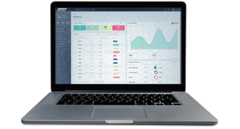

To start working you need to pass the registration process:
After registering you will get a call from a manager for voice confirmation of your account
General Provisions
This policy on processing of personal data is prepared in accordance with the requirements of the Federal Law of 27.07.2006. No. 152-FZ "On Personal Data" (hereinafter the "Personal Data Law") and defines the procedure for processing personal data and measures to ensure security of personal data undertaken by Quantum AI (hereinafter the "Operator").
1.1 The operator's main purpose and condition for its activity is to observe the rights and freedoms of a person and citizen when processing their personal data, including the protection of their rights to privacy, personal and family secrets.
1.2 The present Policy of the Operator regarding the processing of personal data (hereinafter - the Policy) applies to all information which the Operator can obtain about the visitors of the website https://site.com.
2 Basic concepts used in the Policy
2.1 Automated processing of personal data - processing of personal data by means of computer equipment.
2.2 Blocking of personal data - is temporary termination of processing of personal data (except when the processing is necessary to clarify personal data).
2.3 Website means a set of graphic and informational materials, as well as computer programs and databases, ensuring their availability on the Internet at the network address https://site.com.
2.4 Personal Data Information System - a set of personal data contained in databases of personal data, and information technology and technical means ensuring their processing.
2.5 Anonymization of personal data - actions, as a result of which it is impossible to determine, without using additional information, whether the personal data belongs to a particular User or another subject of personal data.
2.6 Processing of personal data - any action (operation) or set of actions (operations) performed with or without the use of automation means with personal data, including collection, recording, systematization, accumulation, storage, clarification (updating, modification), extraction, use, transfer (distribution, provision, access), depersonalization, blocking, deletion, destruction of personal data.
2.7 Operator - a state body, municipal authority, legal entity or individual, independently or jointly with other persons, arranging and (or) carrying out processing of personal data, as well as determining the purpose of personal data processing, composition of personal data to be processed, actions (operations) performed with personal data.
2.8 Personal data - any information relating directly or indirectly to a particular or defined User of the website https://site.com.
2.9. Personal data, authorized by the subject of personal data for distribution - personal data, access to which is provided by the subject of personal data by giving consent to the processing of personal data, authorized by the subject of personal data for distribution in the manner prescribed by law on personal data (hereinafter - personal data, authorized for distribution).
2.10. User - any visitor to the https://site.com website.
2.11. Provision of personal data - actions aimed at disclosure of personal data to a certain person or a certain circle of persons.
2.12. Dissemination of personal data - any action aimed at disclosure of personal data to an indefinite range of persons (transfer of personal data) or to familiarize the general public with personal data, including publication of personal data in the media, placement in information and telecommunications networks or providing access to personal data in any other way.
2.13. Cross-border transfer of personal data - transfer of personal data to the territory of a foreign state to a foreign state authority, a foreign individual or a foreign legal entity.
2.14. Destruction of personal data - any action, as a result of which personal data is destroyed irretrievably with impossibility to further restore the content of personal data in the information system of personal data and (or) destroyed material media of personal data.
3.1 The operator has the right:
- Receive from the subject of personal data reliable information and/or documents containing personal data;
- In case the personal data subject withdraws their consent to the processing of personal data, the operator has the right to continue the processing of personal data without the consent of the personal data subject on the grounds specified in the Personal Data Law;
- Independently determine the composition and list of measures necessary and sufficient to ensure the fulfillment of obligations provided for by the Personal Data Law and regulations adopted in accordance therewith, unless otherwise provided for by the Personal Data Law or other federal laws.
- Provide to the subject of personal data, at his/her request, information relating to the processing of his/her personal data;
- Organize processing of personal data in the manner prescribed by applicable laws of the Your country;
- to respond to requests and inquiries of subjects of personal data and their legal representatives, in accordance with the requirements of the Law on Personal Data;
- Inform the authorized body for protection of the rights of subjects of personal data, at the request of such body, the necessary information within 30 days from the date of receipt of such request
- Publish or otherwise ensure unrestricted access to this Policy on personal data processing
- Take legal, organizational and technical measures to protect personal data from unauthorized or accidental access, destruction, modification, blocking, copying, provision, distribution of personal data, as well as other illegal actions in relation to personal data
- Cease the transfer (distribution, provision, access) of personal data, cease processing and destroy personal data in the manner and cases provided by the Personal Data Law
- Perform any other duties prescribed by the Personal Data Law.
4 The basic rights and obligations of subjects of personal data
4.1 The subjects of personal data have the right:
- To receive information relating to the processing of his personal data, except in cases provided for by federal laws. The information is provided to the subject of personal data by the operator in an accessible form, and it must not contain personal data relating to other subjects of personal data, except in cases where there are legitimate grounds for disclosure of such personal data. The list of information and the procedure for obtaining it is established by the Personal Data Law;
- to require the operator to clarify his personal data, block or destroy them if the personal data is incomplete, outdated, inaccurate, illegally obtained or not necessary for the stated purpose of processing, as well as to take statutory measures to protect their rights;
- to put forward the condition of prior consent when processing personal data for the purpose of promoting goods, works and services on the market
- to withdraw the consent to the processing of personal data;
- To complain to the authorized body for protection of the rights of subjects of personal data or in court against unlawful acts or omissions of the Operator in the processing of his personal data
- To exercise other rights provided by the legislation of the Your country.
4.2 Subjects of personal data shall:
- provide the Operator with reliable data about themselves;
- Inform the Operator of the clarification (updating, modification) of their personal data.
4.3 Persons who provided the Operator with inaccurate information about themselves, or information about another subject of personal data without the consent of the latter, shall be liable in accordance with the laws of the Your country.
5. The operator may process the following personal data of the User
Surname, first name, patronymic.
5.2 E-mail address.
5.3 Phone numbers.
5.4 The site also collects and processes visitors' anonymized data (including cookies) using Internet statistics services (Yandex Metrika and Google Analytics, etc.).
5.5 The above-mentioned data is further combined in the text of this Policy with the general concept of Personal Data.
5.6 The Operator does not process special categories of personal data relating to race, ethnicity, political views, religious or philosophical beliefs, or intimate life.
5.7 Processing of personal data, allowed for dissemination, from among special categories of personal data, specified in Part 1 of Article 10 of the Personal Data Law, is allowed if the prohibitions and conditions stipulated by Article 10.1 of the Personal Data Law are observed.
5.8 The User's consent to the processing of personal data that is permitted for dissemination shall be executed separately from other consents to the processing of their personal data. In this case, the conditions stipulated, in particular, by Article 10.1 of the Personal Data Law shall be observed. The requirements for the content of such consent shall be established by the competent authority for the protection of personal data subjects' rights.
5.8.1 The consent to the processing of personal data allowed for distribution, the User provides to the Operator directly.
5.8.2 The Operator is obliged within three working days from the receipt of the above consent of the User to publish information about the conditions of processing, the existence of prohibitions and conditions for the processing of personal data allowed for distribution to an unlimited number of persons.
5.8.3 Transfer (distribution, provision, access) of personal data, authorized by the subject of personal data for distribution, must be terminated at any time at the request of the subject of personal data. This requirement must include the last name, first name, patronymic (if any), contact information (telephone number, e-mail address or mailing address) of the subject of personal data, as well as a list of personal data whose processing is to be terminated. The personal data specified in this request may only be processed by the Operator to which it is sent.
5.8.4 The consent to the processing of personal data permitted for dissemination shall cease to have effect from the moment the requirement specified in paragraph 5.8.3 of this Policy for the processing of personal data is received by the Operator.
6. Principles of Personal Data Processing
6.1 Processing of personal data is carried out on a lawful and fair basis.
6.2 Processing of personal data is limited to achieving specific, predetermined and legitimate purposes. Processing of personal data that is incompatible with the purposes of personal data collection is not permitted.
6.3 Databases containing personal data, which are processed for purposes incompatible with each other, shall not be combined.
6.4 Only personal data that meets the purposes of processing shall be processed.
6.5 The content and scope of processed personal data shall comply with the stated processing purposes. Processed personal data shall not be excessive in relation to the stated processing purposes. 6.6.
When processing personal data, the accuracy of personal data, its sufficiency, and, if necessary, relevance in relation to the purpose of personal data processing shall be ensured. The operator shall take necessary measures and/or ensure that they are taken to remove or clarify incomplete or inaccurate data.
6.7 Personal data shall be stored in a form that makes it possible to identify the subject of personal data, no longer than required by the purposes of personal data processing, unless the storage period of personal data is established by federal law, a contract to which the subject of personal data is a party, a beneficiary or a guarantor. Processed personal data shall be destroyed or depersonalized upon attainment of processing objectives or if it is no longer necessary to attain such objectives, unless otherwise provided for by federal law.
7. Purposes of personal data processing
7.1 The purpose of processing of personal data of the User:
- Informing the User by sending emails;
- providing the User with access to services, information and/or materials contained on the website https://site.com.
7.2 The Operator also has the right to send the User notifications about new products and services, special offers and various events. The User can always refuse to receive information messages by sending an email to the Operator at support@quantumai.com with the note "Refuse notifications about new products and services and special offers".
7.3 The anonymized data of the Users, collected with the help of the Internet statistics services, serves for collecting information about the Users' actions on the Website, improving the quality of the Website and its content.
8. Legal Basis for Processing of Personal Data
8.1 The legal basis for processing of personal data by the operator are:
- List the laws and regulations governing relations related to your activities, for example, if your activities are related to information technology, in particular the creation of websites, here you can specify the Federal Law "On Information, Information Technology and Information Protection" of 27.07.2006 N 149-FZ;
- The operator's bylaws;
- Contracts entered into between the operator and the subject of personal data;
- Federal laws, other laws and regulations in the sphere of personal data protection;
- Users' consent to the processing of their personal data, to the processing of personal data allowed for dissemination.
8.2. The Operator processes the User's personal data only if the User fills in and/or sends them independently through the special forms located on the website https://site.com or sent to the Operator via e-mail. By filling out the relevant forms and/or sending his personal data to the Operator the User expresses his consent to this Policy.
8.3. The Operator processes impersonal data about the User if it is allowed in the settings of the User's browser (the saving of cookies and the use of JavaScript technology are enabled).
8.4 The subject of personal data independently decides to provide his personal data and gives consent freely, willingly and in his own interest.
9. Conditions for the processing of personal data
9.1 Processing of personal data is carried out with the consent of the subject of personal data to the processing of their personal data.
9.2 Processing of personal data is necessary for achievement of the objectives stipulated by the international treaty of the Your country or the law, for implementation of the functions, powers and duties imposed on the operator by the legislation of the Your country.
9.3 Processing of personal data is necessary for administration of justice, execution of a judicial act, act of another body or official to be executed in accordance with the legislation of the Your country on enforcement proceedings.
9.4 Processing of personal data shall be necessary for execution of an agreement, a party to which or a beneficiary or guarantor under which the personal data subject is a party, as well as for conclusion of an agreement on the initiative of the personal data subject or an agreement, under which the personal data subject will be a beneficiary or guarantor.
9.5 Processing of personal data is necessary to exercise the rights and legitimate interests of the operator or third parties or to achieve socially important goals, provided that this does not violate the rights and freedoms of the subject of personal data.
9.6 Personal data shall be processed if access to such data is granted to an unlimited number of persons by or at the request of the personal data subject (hereinafter, "publicly available personal data").
9.7 Processing of personal data subject to publication or mandatory disclosure in accordance with federal law.
10. Procedure for collection, storage, transfer and other processing of personal data
The security of personal data processed by the Operator is ensured by implementing legal, organizational and technical measures necessary to meet in full the requirements of current legislation in the field of personal data protection.
10.1 The operator provides safety of personal data and takes all possible measures which exclude access to personal data by unauthorized persons.
10.2 The personal data of the User shall never, under no circumstances be transferred to third parties, except in cases related to the implementation of the current legislation or if the subject of personal data has given consent to the Operator to transfer data to a third party to fulfill obligations under a civil law contract.
10.3. In case of identification of inaccuracies in personal data, the User may update them independently, by sending a notice to the Operator's e-mail address support@quantumai.com with a note "Updating of personal data".
10.4 The term of processing of personal data is determined by achieving the purposes for which the personal data was collected, unless a different term is stipulated by the contract or by applicable law.
The User may withdraw their consent to the processing of personal data at any time by sending a notice via e-mail to the Operator's e-mail address support@quantumai.com, marked "Withdrawal of consent to the processing of personal data".
10.5 All information that is collected by third-party services, including payment systems, means of communication and other service providers, is stored and processed by the specified persons (Operators) in accordance with their User Agreement and Privacy Policy. The subject of personal data and/or the User is obliged to get acquainted with the specified documents on his/her own in time. The Operator shall not be liable for the actions of third parties, including the service providers mentioned in this clause.
10.6 The prohibitions established by the personal data subject on the transfer (other than granting access), as well as on the processing or processing conditions (other than gaining access) of personal data permitted for distribution shall not apply in cases of processing of personal data in state, public and other public interests as defined by Russian legislation.
10.7. The Operator shall ensure the confidentiality of personal data when processing personal data.
10.8. The operator shall store personal data in a form that allows to identify the subject of personal data, no longer than the objectives of personal data processing require, unless the period of storage of personal data is established by federal law, a contract, a party to which, a beneficiary or a guarantor under which the subject of personal data is a party.
10.9 A condition for termination of personal data processing may be achievement of personal data processing objectives, expiration of the personal data subject's consent or withdrawal of consent by the personal data subject, as well as detection of unlawful personal data processing.
11. List of actions performed by the operator with received personal data
11.1 The operator collects, records, systematizes, accumulates, stores, clarifies (updates, changes), extracts, uses, transfers (distribution, provision, access), depersonalizes, blocks, deletes and destroys personal data.
11.2 The operator carries out automated processing of personal data with or without the receipt and/or transmission of received information via information and telecommunications networks.
12 Trans-border transfer of personal data
12.1 Before transborder transfer of personal data, the operator shall make sure that the foreign country, to the territory of which the transfer of personal data is intended, provides reliable protection of personal data subjects' rights.
12.2 The transborder transfer of personal data to foreign countries, which do not comply with the above requirements, may take place only if the personal data subject has given his/her written consent for the transborder transfer of his/her personal data and / or fulfillment of an agreement, to which the personal data subject is a party.
13. Confidentiality of personal data
The operator and other persons who obtained access to personal data must not disclose to third parties and not disseminate personal data without the consent of the subject of personal data, unless otherwise provided by federal law.
14. Final provisions
14.1 The User can obtain any clarifications on questions of interest regarding the processing of their personal data by contacting the Operator by e-mail at support@quantumai.com.
14.2 This document will reflect any changes in the personal data processing policy of the Operator. The Policy is valid indefinitely until it is replaced by a new version.
14.3. The current version of the Policy is freely available on the Internet at https://site.com.
We are committed to securing your Personal Data and your privacy.
This Privacy Policy has been created to inform you about how We manage, collect, stores and uses the information you provide in connection with Our website bitcoin-buyer.app (the “Website”).
We will uphold the following principles:
To be transparent in respect of the collection and processing of Personal Data about you:
It is important to Us that you have at all times all the information required for you to make educated decisions about the processing of Personal Data about you. For this purpose, We will make use of various techniques and measures aimed to provide you with relevant information about the processing of Personal Data about you, in the proper manner and timing.
In addition, if We find you are required to be provided with specific information, We will provide it to you in the appropriate time and place.
To process Personal Data about you solely for the purposes outlined in the Policy:
The purposes for which We may process Personal Data about you include, inter alia, to make Our Website available to you and provide you with the services contained therein (the “Services”), to enhance the user experience in Our Website, to improve Our Services (including the Website), to protect Our rights and interests, to perform business and administrative activity that supports the provision of Our Services to Our users, and/or to uphold any legal and/or regulatory requirements.
In addition, We will process Personal Data about you in order to understand your personal needs and preferences.
To invest significant resources in order to respect your rights in connection with Personal Data about you:
We apply significant resources to allow you to exercise your rights as a data subject. Therefore, you may approach Us any time you wish to review Personal Data about you, have Us amend it, erase it, cease using it for specific purposes or in general, or transfer it to you or to a third party. We will fulfill your wishes in accordance with the law.
To secure Personal Data about you:
While We cannot promise absolute protection of the Personal Data about you, We can promise that We use and will continue to use a wide array of means and measures aimed at ensuring the Personal Data about you is secured.
Our Complete Privacy Policy
This Policy describes what kind of Personal Data the Company collects about natural persons, and how it collects it, uses it, shares it with third parties, secures it, processes it, etc.
In this Policy, “Personal Data” refers to any information relating to an identified or identifiable natural person. An identifiable natural person is one who can be identified, directly or in combination with additional information that We have or that We have access to.
In this Policy, the “processing” of Personal Data refers to any operation or set of operations performed on Personal Data, including the collection, recording, organization, structuring, storage, adaptation or alteration, retrieval, consultation, use, disclosure by transmission, dissemination or otherwise making available, alignment or combination, restriction, erasure, or destruction of Personal Data.
Our Services are intended for general audience and are not directed at children under the age of 18. We do not knowingly collect or solicit information from anyone under the age of 18 or knowingly allow such persons to access our Services. If We learn that information about a child was collected, We will take reasonable steps to delete such information as soon as possible.
We collect Personal Data about you whenever you use Our Services, use Our service channels, use the Website and/or contact Us. In some instances, you will actively provide Us with the Personal Data, and in other instances, We will collect the Personal Data about you by examining and analyzing your use of Our Services and/or Our service channels.
You are not obligated to provide Us with any Personal Data about you. However, in some instances, not providing such Personal Data will prevent Us from providing you with the Services, will prevent your use of the Website, and/or will cause the malfunctioning of Our Services and the Website.
Personal Data We collect upon each browsing onto the Website: this information includes online activity log, traffic information (including, without limitation, IP address, time of access, date of access, web and mobile page(s) visited, language used, software crash reports and type of browser used, information regarding the device you used. Some of this information may not identify you personally, and therefore not constitute Personal Data.
Personal Data We receive from you: any Personal Data you provide to Us of your own free will when contacting Us.
Personal Data You specifically provide to Us for submission to third-parties: this information includes your name and email address.
The Company processes your Personal Data for one or more of the purposes outlined in this section and according to the appropriate legal basis.
The Company will not process Personal Data about you unless there is a legal basis for such processing. The legal bases according to which the Company may process Personal Data about you are as follows:
The following list outlines the purposes for which We may process Personal Data about you and the legal basis for any such processing:
| # | Purpose | Legal Basis |
|---|---|---|
| 1 |
In order to submit your details to third parties at your
request
We may collect Personal Data about you in order to submit it to third parties, if you specifically request that. |
You have given consent to the processing of your Personal Data for one or more specific purposes. |
| 2 |
In order to respond to your queries, requests, and/or
complaints
Processing of Personal Data about you is required in order to respond to queries you have concerning your use of the Services. |
Processing is necessary for the purpose of the legitimate interests pursued by the Company or by a third party. |
| 3 |
In order to comply with any legal obligations or judicial
or administrative orders
We process Personal Data about you in order to comply with Our various legal obligations. |
Processing is necessary for compliance with a legal obligation to which the Company is subject. |
| 4 |
In order to improve Our Services We may use Personal Data about you in order to improve Our Services. Such processing will include, inter alia, any crash logs or other malfunction reports obtained in respect of Services. |
Processing is necessary for the purpose of the legitimate interests pursued by the Company or by a third party. |
| 5 | In order to prevent fraud, abusive use of Our Services | Processing is necessary for the purpose of the legitimate interests pursued by the Company or by a third party. |
| 6 |
In order to perform and maintain various activities
supporting the provisions of Our Services Such activities include back-office functions, business development activities, strategic decision-making, oversight mechanisms, etc. |
Processing is necessary for the purpose of the legitimate interests pursued by the Company or by a third party. |
| 7 |
In order to perform analysis, including statistical
analysis We use various analytical measures (including statistical ones) to make decisions on various issues. |
Processing is necessary for the purpose of the legitimate interests pursued by the Company or by a third party. |
| 8 |
In order to protect Our and third parties’ interests,
rights, and assets, including initiation, exercise, or
defense of legal claims We may process Personal Data about you in order to protect Our interests, rights, and assets, or those of third parties, according to any law, regulation, or agreement, including any of Our terms and conditions and policies. |
Processing is necessary for the purpose of the legitimate interests pursued by the Company or by a third party. |
The Company may also share Personal Data about you with third parties that provide Us services, such as storage and hosting providers, IP address information, analysis of user experience and research, analytical, technical, and diagnostic services.
In addition, you may specifically request that We submit certain Personal Data about you to third-party Bitcoin trading platforms. In such cases, We will share the Personal Data that you will provide to Us for such purpose, to such third parties, and their use of your Personal Data will be subject to their own privacy policies.
The Company may also share Personal Data about you with its related entities and business partners, which provide it with resources that enable the Company to enrich and improve the level of services and products it provides to its users.
The Company may share Personal Data about you with governmental, local, official, and regulatory authorities, as well as if such disclosure is required to protect Our and third parties’ interests, rights, and assets, including initiation, exercise, or defense of legal claims.
In addition, We may disclose Personal Data about you to potential purchasers or investors of, or lenders to, the Company and/or any company within the group of companies of which the Company is a part, or in the event of any similar transaction (including the sale of assets of the Company and/or of any company within the group of companies of which the Company is a part), and/or in connection with any merger, reorganization, consolidation, or bankruptcy of the Company and/or any company within the group of companies of which the Company is a part.
We may use certain third party services, such as analytics companies or companies delivering advertisements in our Website, which may also use cookies or other technologies, and those practices and providers are subject to their own policies.
Cookie (which is a small text file) is installed on the device via which you visit or access the Website. The cookies shall allow Us to collect information about you and your behavior, in order to improve your user experience, to remember your preferences and settings, and to customize and offer you products and services that may interest you. Cookies may also be used to collect statistics and perform analytics.
Some of the cookies We may use are session cookies, which are downloaded temporarily to your device and last until you close your web browser, while others are persistent cookies, which last on your device after you cease browsing the Website and can be used to help the Website remember you as a returning visitor when you return to the Website.
Cookies
To enrich and perfect your online experience, uses "Cookies", similar technologies and services provided by others to display personalized content, appropriate advertising and store your preferences on your computer. A cookie is a string of information that a website stores on a visitor’s computer, and that the visitor’s browser provides to the website each time the visitor returns. uses cookies to help identify and track visitors, their usage of and their website access preferences. visitors who do not wish to have cookies placed on their computers should set their browsers to refuse cookies before using websites, with the drawback that certain features of websites may not function properly without the aid of cookies. By continuing to navigate our website without changing your cookie settings, you hereby acknowledge and agree to use of cookies.
Blocking and removal of cookies
You can change your browser settings to block and delete some or all cookies. Please see below links to instructions on how to do this in respect of some of the most popular web browsers:
Please note, however, that if you do so, some or all of the Website’s features and functionalities might not perform as intended.
ONLINE TRACKING NOTICE
AT THIS TIME, THIS SERVICE DOES NOT SUPPORT DO-NOT-TRACK SIGNALS.
The Company shall retain Personal Data about you for as long as is required to fulfill the purposes of the processing of the Personal Data as outlined in this Policy, or for a longer period as required according to the legislation, regulation, policies, and orders that apply to Us.
In order to ensure that Personal Data about you is not retained for longer than is required, We periodically review Personal Data retained by Us to examine whether any Personal Data can be erased.
Personal Data about you may be transferred to a third country (i.e. jurisdictions other than the one you reside in) or to international organizations. In such circumstances, the Company shall take appropriate safeguards to ensure the protection of Personal Data about you and to provide that enforceable data subject rights and effective legal remedies for data subjects are available.
If you are an EEA (European Economic Area) resident, please note that these safeguards and protection will be available if any of the following are met:
We implement appropriate technical and organizational measures to ensure an appropriate level of security to Personal Data, taking into account the risks that are presented by processing, in particular from accidental or unlawful destruction, loss, alteration, unauthorized disclosure of, or access to Personal Data transmitted, stored, or otherwise processed.
We may be required, due to legal or other obligations outside Our control, to transfer Personal Data about you to third parties, such as public authorities. In such circumstances, We have limited control over the level of protection provided to the Personal Data about you by such third parties.
Any transfer of Personal Data via the internet cannot be fully secured. Therefore, the Company cannot ensure the protection of Personal Data about you when transferred via the internet to Us.
The Website may provide links to websites and/or applications of third parties. The Company does not control such websites and applications, nor the collection and/or processing of Personal Data about you by such websites and applications, and We are not responsible for such websites and applications, nor for their privacy and data protection policies and activities. This Policy does not apply to any actions taken via such websites and/or applications.
Whenever you access such third parties' websites and/or applications, We recommend that you carefully review their privacy policies prior to using such websites and/or applications and prior to disclosing any Personal Data about you.
We may amend, from time to time, the terms of this Policy. Whenever We amend this Policy, We will notify you of such amendments by publishing the updated Policy on the Website. In addition, when We make significant amendments to this Policy, We will strive to inform you about such amendments via means of communication We believe are reasonably appropriate to inform you of such amendments and by publishing a notice about such amendments on the Website. Unless stated otherwise, all amendments will enter into force upon publication of the updated Policy on our Website.
Generally, you have the right to request that We provide you with confirm whether Personal Data about you is being collected by us, to ask to review such data, to rectify the content if applicable and to erase the Personal Data no longer required by Us. You may also restrict you consent to certain processing of your Personal Information.
If you are an EEA resident please read this section below:
You are entitled to the following rights in respect of the Personal Data about you.
You have the right to receive from the Company confirmation as to whether or not Personal Data about you is being processed, and, if that is the case, access to the Personal Data and the following information: (1) the purposes of the processing; (2) the categories of Personal Data concerned; (3) the recipients or categories of recipients to whom the Personal Data have been or will be disclosed, in particular recipients in third countries outside the European Economic Area (EEA) or international organizations; (4) if possible, the envisaged period for which the Personal Data will be stored, or, if not possible, the criteria used to determine that period; (5) the existence of the right to request from the Company rectification or erasure of Personal Data or restriction of processing of Personal Data about you or to object to such processing; (6) the right to lodge a complaint with a supervisory authority; (7) if the Personal Data is not collected from you, any available information as to its source; (8) the existence of profiling; and (9) if Personal Data is transferred to a third country outside the EEA or to an international organization, the appropriate safeguards relating to the transfer.
The Company shall provide a copy of the Personal Data undergoing processing and may charge a reasonable fee for any further copies requested by you. If you make the request by electronic means, and unless otherwise requested by you, the information shall be provided in a commonly used electronic form.
The right to obtain a copy of the Personal Data shall not adversely affect the rights and freedoms of others. Therefore, if the request harms the rights and freedoms of others, the Company may not fulfill your request or do so in a limited manner.
You have the right to obtain from the Company the rectification of inaccurate Personal Data about you. Taking into account the purposes of the processing, you have the right for incomplete Personal Data about you to be completed, including by means of providing a supplementary statement.
You have the right to obtain from the Company the erasure of Personal Data about you if one of the following grounds applies: (a) the Personal Data is no longer necessary in relation to the purpose for which it was collected or otherwise processed; (b) you withdraw your consent on which the processing is based and there is no other legal ground for the processing; (c) you object at any time, on grounds relating to your particular situation, to the processing of Personal Data about you that is based on the legitimate interests pursued by Us or by a third party, and there are no overriding legitimate grounds for the processing; (d) you object to the processing of Personal Data about you for direct marketing purposes; (e) the Personal Data has been unlawfully processed; or (f) the Personal Data about you has to be erased for compliance with a legal obligation in European Union or Member State law to which the Company is subject.
This right is not applicable to the extent that the processing is necessary (a) for compliance with a legal obligation that requires processing by European Union or Member State law to which the Company is subject; or (b) for the establishment, exercise, or defense of legal claims.
You have the right to obtain from the Company the restriction of processing of Personal Data about you if one of the following applies: (a) the accuracy of the Personal Data is contested by you, for a period enabling the Company to verify the accuracy of the Personal Data about you; (b) the processing is unlawful and you oppose the erasure of the Personal Data about you and request the restriction of its use instead; (c) the Company no longer needs the Personal Data about you for the purposes of processing, but the Personal Data is required by you for the establishment, exercise, or defense of legal claims; (d) if the processing of Personal Data about you is necessary for the purpose of the legitimate interests pursued by the Company or by a third party, unless We demonstrate compelling legitimate grounds for the processing that override your interests, rights, and freedoms or for the establishment, exercise, or defense of legal claims; or (e) if the Personal Data about you is processed for direct marketing purposes, including profiling, to the extent it is related to such direct marketing.
If the processing of Personal Data about you has been restricted following your request, such Personal Data shall, with the exception of storage, only be processed with your consent or for the establishment, exercise, or defense of legal claims or for the protection of the rights of another natural or legal person or for reasons of important public interest of the European Union or of a Member State.
You have the right to receive the Personal Data about you, which you have provided to the Company, in a structured, commonly used, and machine-readable format, as well as the right to transmit such Personal Data to another controller, if (a) the processing is based on your consent or on a contract to which you are a party, and (b) the processing is carried out by automated means.
In exercising your right to data portability, you have the right for the Personal Data about you to be transmitted directly from the Company to another controller, where technically feasible. The exercise of your right to data portability is without prejudice to your and the Company’s rights under your right to erasure. In addition, the right to data portability shall not adversely affect the rights and freedoms of others.
You have the right to object at any time, on grounds relating to your particular situation, to the processing of Personal Data about you that is based on the legitimate interests pursued by the Company or by a third party, including profiling based on such legitimate interests. In such case, We shall no longer process the Personal Data about you, unless We demonstrate compelling legitimate grounds for the processing that override your interests, rights, and freedoms or for the establishment, exercise, or defense of legal claims.
You have the right to object at any time to the processing of Personal Data about you for direct marketing purposes, including profiling, to the extent it is related to such direct marketing.
You may withdraw your consent provided to Us for the purpose of processing Personal Data about you at any time, without affecting the lawfulness of processing based on your consent before its withdrawal.
Right to lodge a complaint with a supervisory authority
You have the right to lodge a complaint with a supervisory authority established by a Member State to protect the fundamental rights and freedoms of natural persons in relation to the processing of Personal Data within the European Union.
Your rights in respect of Personal Data about you as outlined in this section 13 may be restricted by European Union or Member State law to which the Company is subject.
We shall provide you with the information requested according to your rights outlined in this section 13 without undue delay and in any event within one month of receipt of the request. That period may be extended by two further months where necessary, taking into account the complexity and number of the requests. We shall inform you of any such extension within one month of receipt of your request, together with the reasons for the delay.
The information requested according to your rights outlined in this section 13 shall be provided free of charge, unless stated otherwise in this section 13. Where requests are manifestly unfounded or excessive, in particular because of their repetitive character, We may either (a) charge a reasonable fee, taking into account the administrative costs of providing the information or communication or taking the action requested; or (b) refuse to act on the request.
The Company may require you to provide additional information necessary to confirm your identity in order to fulfill your request according to your rights outlined in this section 13, if We have reasonable doubts concerning the identity of the natural person making the request.